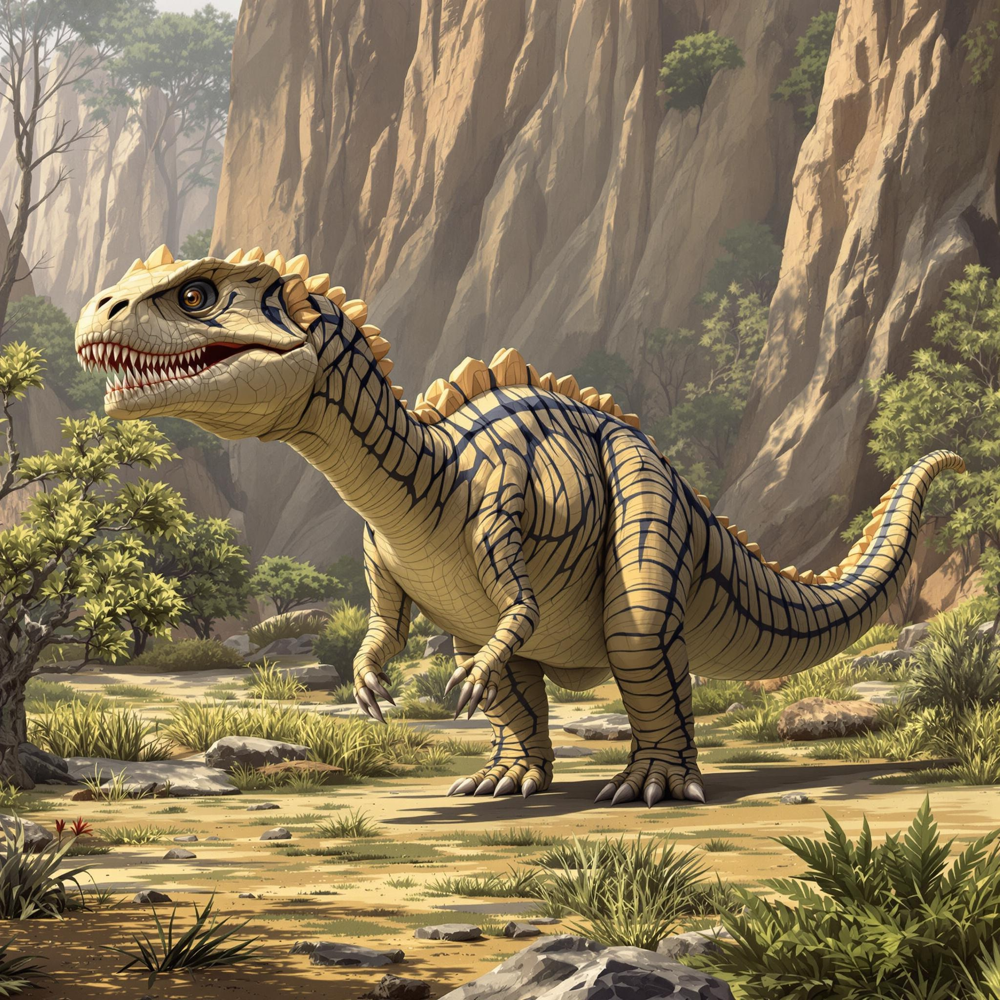
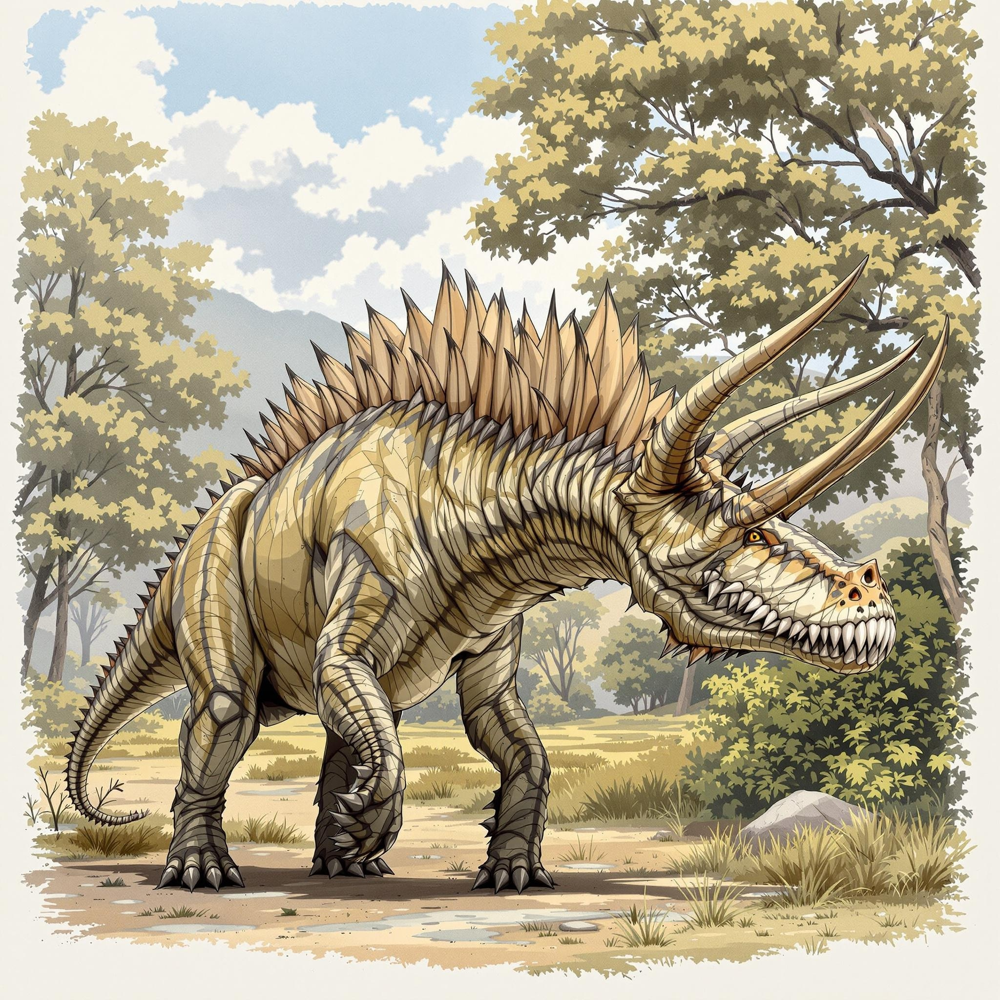
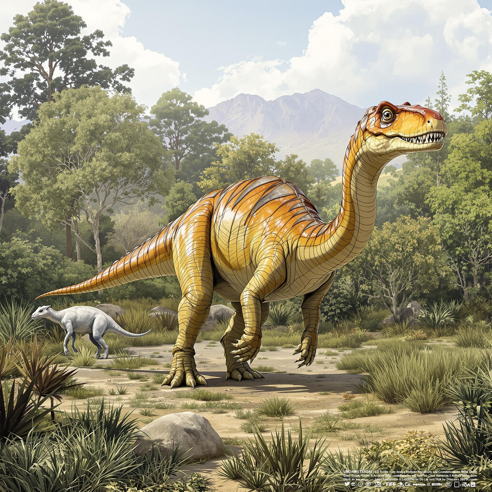
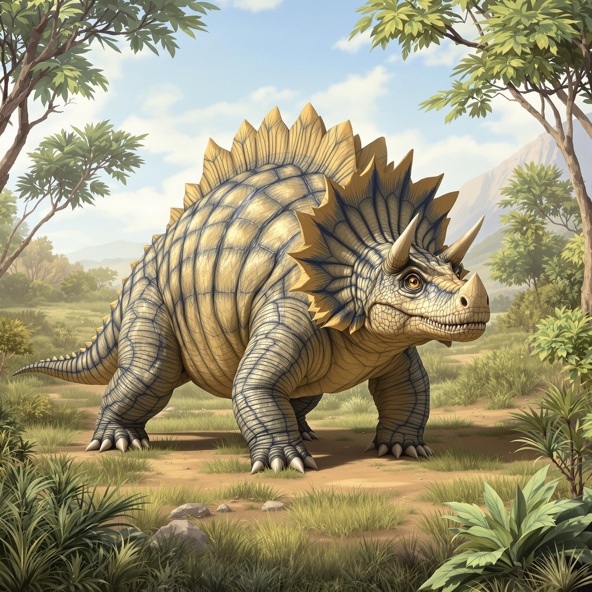

육지의 거인들
지구 역사상 가장 거대했던 초식공룡들의 세계
거대 사우로포드

브라키오사우루스
- 시대 쥐라기 후기 (1억 5,400만 년 전)
- 크기 키 13m
- 체중 35-58톤
- 특징 앞다리가 뒷다리보다 긴 기린형 체형
'팔 도마뱀'이라는 뜻의 브라키오사우루스는 앞다리가 뒷다리보다 길어 몸이 기린처럼 기울어진 독특한 체형을 가졌습니다.
특이사항
- 머리 위쪽에 위치한 콧구멍으로 효율적인 열 배출
- 머리까지 피를 펌프질하기 위한 강력한 심장
- 머리 들어올릴 때 혈압 조절을 위한 특별한 시스템 보유

디플로도쿠스
- 시대 쥐라기 후기 (1억 5천만 년 전)
- 크기 길이 24-27m
- 체중 10-16톤
- 특징 채찍처럼 긴 목과 꼬리
가장 긴 공룡 중 하나로, 다른 대형 공룡에 비해 상대적으로 가벼운 체중이 특징입니다.
특이사항
- 채찍처럼 소리를 낼 수 있는 꼬리 (방어 무기로 사용)
- 연필처럼 가는 이빨 (나뭇잎을 훑어 먹는데 특화)
- 위 속의 작은 돌(위석)로 소화 보조

트리케라톱스
- 시대 백악기 최후기 (6,800만 년 전)
- 크기 길이 8-9m
- 체중 6-12톤
- 특징 이마의 1m 길이 뿔과 큰 프릴
'세 개의 뿔 얼굴'이라는 뜻으로, 이마에 두 개의 긴 뿔과 코 위의 짧은 뿔, 그리고 뒤통수를 덮는 커다란 프릴이 특징입니다.
특이사항
- 포식자 방어와 종내 경쟁에 사용된 뿔과 프릴
- 한 번에 800개 이상의 교체 가능한 이빨
- 단단한 부리로 딱딱한 식물도 섭취 가능

파타고타이탄
- 시대 백악기 후기
- 크기 길이 37m
- 체중 70톤
- 특징 거대한 체구
아르헨티나에서 발견된 거대 공룡으로, 가장 큰 공룡 중 하나입니다.
특이사항
- 매우 긴 목과 꼬리
- 강력한 다리 근육
- 효율적인 소화 시스템

알라모사우루스
- 시대 백악기 후기 (7천만 년 전)
- 크기 길이 21m
- 체중 30-35톤
- 특징 북아메리카의 마지막 거대 공룡
북아메리카 최후의 거대 사우로포드로, 백악기 말까지 생존했습니다.
특이사항
- 강력한 꼬리와 목 근육
- 효율적인 소화 시스템
- 티라노사우루스와 같은 시기에 생존

마멘치사우루스
- 시대 쥐라기 후기 (1억 6천만 년 전)
- 크기 길이 26m
- 체중 40-50톤
- 특징 가장 긴 목을 가진 공룡
중국에서 발견된 이 공룡은 역사상 가장 긴 목을 가진 공룡으로 알려져 있습니다.
특이사항
- 목의 길이가 체장의 절반 이상
- 19개의 목뼈 보유
- 효율적인 체온 조절 시스템

아마르가사우루스
- 시대 백악기 초기 (1억 3천만 년 전)
- 크기 길이 10m
- 체중 2-3톤
- 특징 목에 있는 이중 가시
목에 두 줄의 긴 가시가 있는 독특한 외모를 가진 중형 사우로포드입니다.
특이사항
- 방어와 체온조절에 사용된 목 가시
- 상대적으로 작은 크기의 사우로포드
- 남아메리카 특산 공룡
뿔 공룡들

토로사우루스
- 시대 백악기 후기
- 크기 길이 8m
- 체중 4톤
- 특징 가장 긴 뿔을 가진 공룡
트리케라톱스의 사촌으로, 더 긴 뿔을 가진 공룡입니다.
특이사항
- 2m가 넘는 이마 뿔
- 강력한 방어 능력
- 발달된 사회성

케라토사우루스
- 시대 백악기 후기
- 크기 길이 6m
- 체중 2톤
- 특징 특이한 뿔 배열
독특한 뿔 배열을 가진 중형 초식공룡입니다.
특이사항
- 다양한 방향의 뿔
- 효과적인 방어 구조
- 무리 생활
오리주둥이 공룡들

파라사우롤로푸스
- 시대 백악기 후기
- 크기 길이 10m
- 체중 2.5톤
- 특징 긴 관 모양의 머리 장식
머리의 긴 관으로 소리를 내어 의사소통했던 것으로 추정됩니다.

코리토사우루스
- 시대 백악기 후기
- 크기 길이 9m
- 체중 3-4톤
- 특징 투구 모양의 머리 장식
머리의 특이한 모양 때문에 '투구 도마뱀'이라고도 불립니다.

마이아사우라
- 시대 백악기 후기
- 크기 길이 9m
- 체중 4톤
- 특징 새끼를 돌보는 습성
'좋은 어미 도마뱀'이라는 뜻으로, 알과 새끼를 돌보는 첫 증거를 제공했습니다.

에드몬토사우루스
- 시대 백악기 후기
- 크기 길이 13m
- 체중 4톤
- 특징 발달된 오리 부리
가장 성공적인 오리주둥이 공룡 중 하나입니다.
특이사항
- 효율적인 식물 처리
- 발달된 사회성
- 계절 이동 증거

사우롤로푸스
- 시대 백악기 후기
- 크기 길이 9m
- 체중 2톤
- 특징 중공 머리 볏
특이한 소리를 낼 수 있었던 오리주둥이 공룡입니다.
특이사항
- 복잡한 소리 발성
- 사회적 의사소통
- 효율적인 식생활
갑옷 공룡들

스테고사우루스
- 시대 쥐라기 후기 (1억 5,000만 년 전)
- 크기 길이 9m
- 체중 5-7톤
- 특징 등의 이중 열 판과 꼬리 가시
'지붕 도마뱀'이라는 뜻으로, 등에 17개의 뼈판과 꼬리 끝의 4개 가시가 특징입니다.
특이사항
- 체온 조절과 과시용 등 판
- 방어용 꼬리 가시
- 호두알만한 크기의 작은 뇌

안킬로사우루스
- 시대 백악기 후기 (6,800-6,600만 년 전)
- 크기 길이 8m
- 체중 6톤
- 특징 전신 갑옷과 꼬리 방망이
'굽은 도마뱀'이라는 뜻으로, 전신을 덮는 뼈 갑옷과 강력한 꼬리 방망이가 특징입니다.
특이사항
- 뼈로 된 갑옷판으로 전신 보호
- 40kg 이상의 무게를 가진 꼬리 방망이
- 포식자에 대한 완벽한 방어 체계

노도사우루스
- 시대 백악기 후기
- 크기 길이 5m
- 체중 1.5톤
- 특징 완벽한 갑옷
가장 잘 보존된 갑옷 공룡 화석이 발견된 종입니다.
특이사항
- 정교한 갑옷 배열
- 위장 능력
- 효과적인 방어

사우로펠타
- 시대 백악기 후기
- 크기 길이 5.5m
- 체중 2톤
- 특징 가시 달린 갑옷
날카로운 가시로 덮인 갑옷을 가진 공룡입니다.
특이사항
- 전신 가시 방어
- 강력한 꼬리 무기
- 단단한 부리
새로운 발견들

보레알로펠타
- 시대 백악기 후기
- 크기 길이 6m
- 체중 2.5톤
- 특징 완벽하게 보존된 화석
2017년 발견된 새로운 갑옷 공룡으로, 피부 조직까지 보존되었습니다.
특이사항
- 피부 조직 보존
- 위 내용물 발견
- 색상 추정 가능
특이한 초식공룡들

데이노케이루스
- 시대 백악기 후기
- 크기 길이 11m
- 체중 6톤
- 특징 거대한 팔
3.5m 길이의 거대한 팔을 가진 특이한 초식공룡입니다.
특이사항
- 긴 팔과 발톱
- 오리 같은 부리
- 혼합 식성 가능성

테논토사우루스
- 시대 백악기 전기
- 크기 길이 4m
- 체중 200kg
- 특징 빠른 주행 능력
두 발로 빠르게 달릴 수 있었던 작은 초식공룡입니다.
특이사항
- 빠른 달리기 능력
- 민첩한 움직임
- 지능이 높았을 것으로 추정